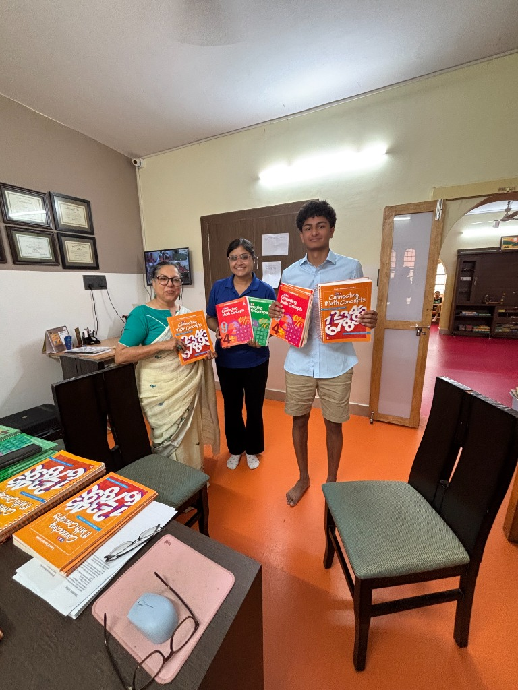
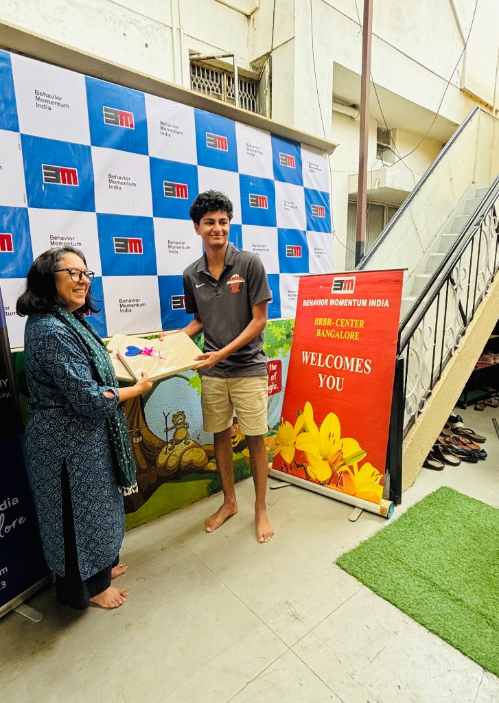
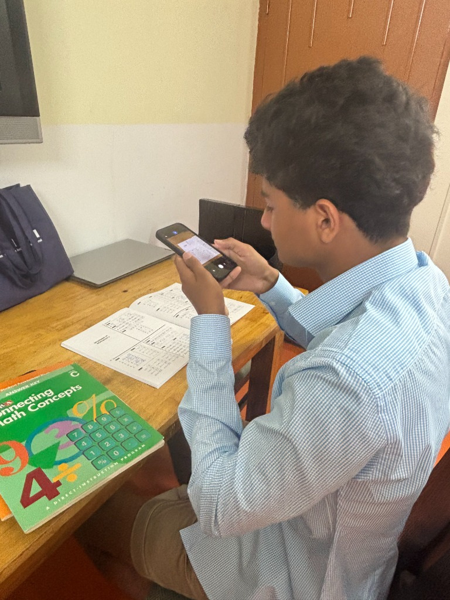
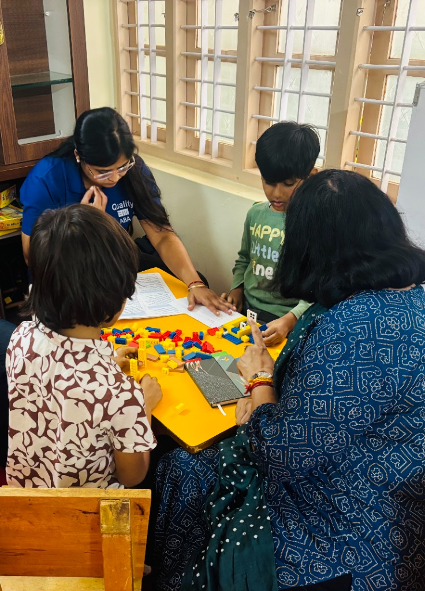

Field notes
Bringing Connecting Math Concepts to a classroom in Bangalore

Earlier this year I set out to fund a set of Direct Instruction math curricula for a school in Bangalore that serves students with autism. The program, Connecting Math Concepts, is highly scripted and evidence-based, but it's also expensive, and the school didn't have it.
Over about three weeks, friends and family chipped in, and one local educational company made a larger contribution that got us most of the way there. It was enough to purchase Levels A through C, spanning kindergarten through second grade, along with the supplemental materials therapists would need to run the program.
3 weeks
to fund
Levels A–C
K through grade 2
1 week
on the ground

I spent a week in Bangalore helping the therapists unpack and set up the materials, sorting kits, organizing supplemental pieces, and learning about how each level was sequenced. That week is also where the project started to change shape.

The curriculum was built somewhere else, for someone else. Watching it land in this classroom raised a question I hadn't planned on asking.
That question turned into a second, ongoing piece of the project: adapting a Direct Instruction reading program to be more culturally responsive for students in India. I wrote about how that started, and what “culturally responsive” ended up meaning in practice, in the next post.

Next in this thread
Ensuring a strong reading curriculum fits the classroom it serves